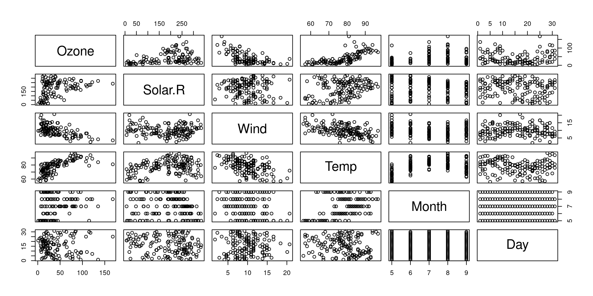
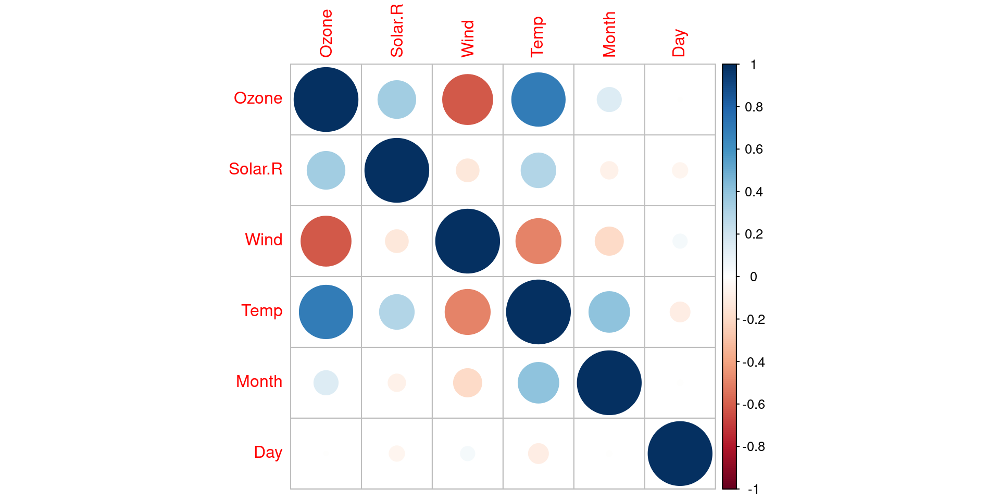
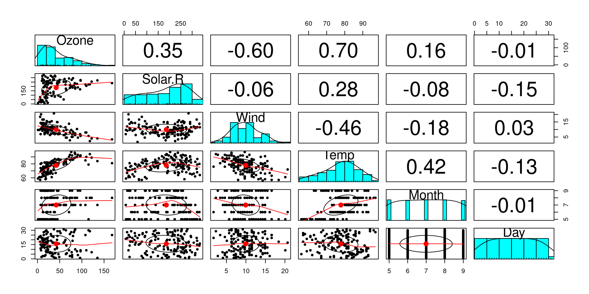
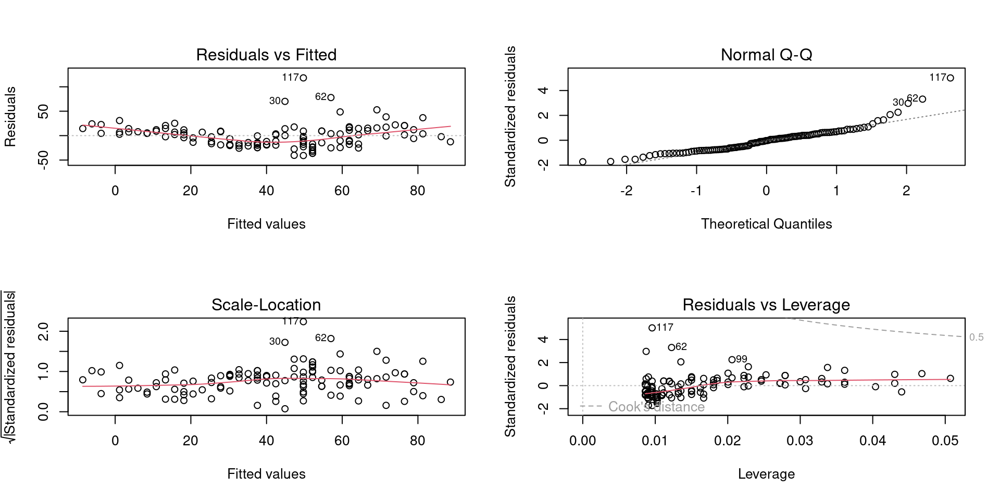
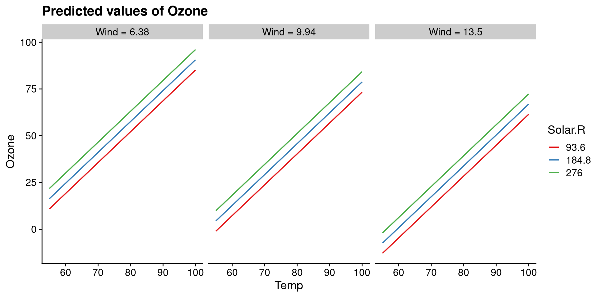
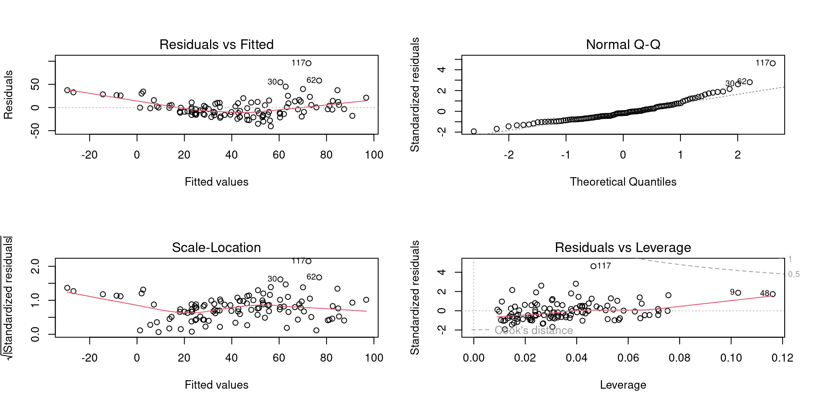

Rows: 153
Columns: 6
$ Ozone <int> 41, 36, 12, 18, NA, 28, 23, 19, 8, NA, 7, 16, 11, 14, 18, 14, …
$ Solar.R <int> 190, 118, 149, 313, NA, NA, 299, 99, 19, 194, NA, 256, 290, 27…
$ Wind <dbl> 7.4, 8.0, 12.6, 11.5, 14.3, 14.9, 8.6, 13.8, 20.1, 8.6, 6.9, 9…
$ Temp <int> 67, 72, 74, 62, 56, 66, 65, 59, 61, 69, 74, 69, 66, 68, 58, 64…
$ Month <int> 5, 5, 5, 5, 5, 5, 5, 5, 5, 5, 5, 5, 5, 5, 5, 5, 5, 5, 5, 5, 5,…
$ Day <int> 1, 2, 3, 4, 5, 6, 7, 8, 9, 10, 11, 12, 13, 14, 15, 16, 17, 18,…Topic 11 – Multiple Linear Regression
ENVX1002 Introduction to Statistical Methods
Januar Harianto
The University of Sydney
Jan 2024
Recap
Simple linear regression
Y_i = \beta_0 + \beta_1 x_i + \epsilon_i
Ideal for predicting a continuous response variable from a single predictor variable: “How does y change as x changes?”
What if we have more than one predictor?
What is the model and how do we interpret the results?
Multiple linear regression


Francis Galton and Karl Pearson
History
- First raised by Francis Galton in 1886, after studying genetic variations in sweet peas over several generations.
- Karl Pearson developed the mathematical formalism for the multiple linear regression model in the early 1900s.
“The somewhat complicated mathematics of multiple correlation, with its repeated appeals to the geometrical notions of hyperspace, remained a closed chamber to him.”
– Pearson (1930), on Galton’s work with MLR
Air Quality in New York (1973)
Air quality
Rows: 153
Columns: 6
$ Ozone <int> 41, 36, 12, 18, NA, 28, 23, 19, 8, NA, 7, 16, 11, 14, 18, 14, …
$ Solar.R <int> 190, 118, 149, 313, NA, NA, 299, 99, 19, 194, NA, 256, 290, 27…
$ Wind <dbl> 7.4, 8.0, 12.6, 11.5, 14.3, 14.9, 8.6, 13.8, 20.1, 8.6, 6.9, 9…
$ Temp <int> 67, 72, 74, 62, 56, 66, 65, 59, 61, 69, 74, 69, 66, 68, 58, 64…
$ Month <int> 5, 5, 5, 5, 5, 5, 5, 5, 5, 5, 5, 5, 5, 5, 5, 5, 5, 5, 5, 5, 5,…
$ Day <int> 1, 2, 3, 4, 5, 6, 7, 8, 9, 10, 11, 12, 13, 14, 15, 16, 17, 18,…Ozone: harmful air pollutant when present at ground level; main component of smog:
Ozone: ozone concentration (ppb)Solar.R: solar radiation (lang)Wind: wind speed (mph)Temp: ambient temperature (degrees F)Month: month (1-12)Day: day of the month (1-31)
Correlations
corrplot
psych
The simplest model
Pick the predictor that has the highest correlation coefficient with the response variable.
Ozone Solar.R Wind Temp Month
Ozone 1.000000000 0.34834169 -0.61249658 0.6985414 0.142885168
Solar.R 0.348341693 1.00000000 -0.12718345 0.2940876 -0.074066683
Wind -0.612496576 -0.12718345 1.00000000 -0.4971897 -0.194495804
Temp 0.698541410 0.29408764 -0.49718972 1.0000000 0.403971709
Month 0.142885168 -0.07406668 -0.19449580 0.4039717 1.000000000
Day -0.005189769 -0.05775380 0.04987102 -0.0965458 -0.009001079
Day
Ozone -0.005189769
Solar.R -0.057753801
Wind 0.049871017
Temp -0.096545800
Month -0.009001079
Day 1.000000000What can we understand about the relationship between Ozone and Temp (r = 0.7)?
Relationship
What can we understand about the relationship between Ozone and Temp (r = 0.7)?
Relationship
What can we understand about the relationship between Ozone and Temp (r = 0.7)?
Fitting the model
Assumptions
ggfortify

Interpretation
Call:
lm(formula = Ozone ~ Temp, data = airquality)
Residuals:
Min 1Q Median 3Q Max
-40.729 -17.409 -0.587 11.306 118.271
Coefficients:
Estimate Std. Error t value Pr(>|t|)
(Intercept) -146.9955 18.2872 -8.038 9.37e-13 ***
Temp 2.4287 0.2331 10.418 < 2e-16 ***
---
Signif. codes: 0 '***' 0.001 '**' 0.01 '*' 0.05 '.' 0.1 ' ' 1
Residual standard error: 23.71 on 114 degrees of freedom
(37 observations deleted due to missingness)
Multiple R-squared: 0.4877, Adjusted R-squared: 0.4832
F-statistic: 108.5 on 1 and 114 DF, p-value: < 2.2e-16Tempis a statistically significant predictor ofOzone(p < .001).- The (simple linear) model explains 49% of variance (r2 = 0.49).
Can we improve the model in other ways?
Multiple linear regression
Important concepts
- The “best” model is the one that best describes the relationship between the response and the predictors.
- NOT the model that includes all possible predictors (data dredging).
Principle of parsimony
A good model:
- Has only useful predictors.
- Has no redundant predictors (principle of orthogonality).
- Is interpretable (principle of transparency) or predicts well (principle of accuracy).
The MLR model
An extension of simple linear regression to include more than one predictor variable: “How does y change as x_1, x_2, …, x_k change?”
Y_i = \beta_0 + \beta_1 x_1 + \beta_2 x_2 + ... + \beta_k x_k + \epsilon_i
Therefore, estimating the model involves estimating the values of \beta_0, \beta_1, \beta_2, …, \beta_k.
- \beta_0 is the intercept
- \beta_1 to \beta_k are the partial regression coefficients
- \epsilon is the error term
Explore
Rows: 153
Columns: 6
$ Ozone <int> 41, 36, 12, 18, NA, 28, 23, 19, 8, NA, 7, 16, 11, 14, 18, 14, …
$ Solar.R <int> 190, 118, 149, 313, NA, NA, 299, 99, 19, 194, NA, 256, 290, 27…
$ Wind <dbl> 7.4, 8.0, 12.6, 11.5, 14.3, 14.9, 8.6, 13.8, 20.1, 8.6, 6.9, 9…
$ Temp <int> 67, 72, 74, 62, 56, 66, 65, 59, 61, 69, 74, 69, 66, 68, 58, 64…
$ Month <int> 5, 5, 5, 5, 5, 5, 5, 5, 5, 5, 5, 5, 5, 5, 5, 5, 5, 5, 5, 5, 5,…
$ Day <int> 1, 2, 3, 4, 5, 6, 7, 8, 9, 10, 11, 12, 13, 14, 15, 16, 17, 18,…Visualisation: not easy
Are the plots useful?
3D plot
Visualisation: not easy
Are the plots useful?
4D plot
Partial regression coefficients
Given the multiple linear model: Y_i = \beta_0 + \beta_1 x_1 + \beta_2 x_2 + ... + \beta_k x_k + \epsilon_i
The partial regression coefficient for a predictor x_i is the amount by which the response variable Y changes when x_k is increased by one unit, while all other predictors are held constant.
\beta_k = \frac{\Delta Y}{\Delta x_k}
Partial regression coefficients: visualisation
With
WindandSolar.Rheld constant, how doesTempaffectOzone?
Interpreting the partial regression coefficients
Call:
lm(formula = Ozone ~ Solar.R + Wind + Temp, data = airquality)
Coefficients:
(Intercept) Solar.R Wind Temp
-64.34208 0.05982 -3.33359 1.65209 Holding all other variables constant:
- For every 1 unit increase in
Solar.R,Ozoneincreases by a mean value of 0.06 ppb. - For every 1 degree increase in
Temp,Ozoneincreases by a mean value of 1.65 ppb. - For every 1 unit increase in
Wind,Ozonedecreases by a mean value of 3.33 ppb.
Caution
If the model is not “valid”, then the partial regression coefficients are not meaningful.
Assumptions
LINE
As with Simple Linear Regression, we need to check the assumptions of the model (LINE):
- Linearity: the relationships between the response and the predictors are all linear.
- Independence: the observations are independent of each other.
- Normality: the residuals are normally distributed.
- Equal variance: the variance of the residuals is constant.
Recall
In SLR, the model is made up of the deterministic component (the line) and the random component (the error term).
Y_i = \color{seagreen}{\beta_0 + \beta_1 x_i} + \color{firebrick}\epsilon_i
This is the same for MLR: Y_i = \color{seagreen}{\beta_0 + \beta_1 x_1 + \beta_2 x_2 + ... + \beta_k x_k} + \color{firebrick}{\epsilon_i}
Since only the error term is random, the assumptions are still about the error term, \hat\epsilon, which is simple to assess!
Assumptions of MLR
Transformation using log()
Some evidence of nonlinearity in the diagnostic plots. Transform and re-check assumptions.
Results
Call:
lm(formula = log(Ozone) ~ Solar.R + Wind + Temp, data = airquality)
Residuals:
Min 1Q Median 3Q Max
-2.06193 -0.29970 -0.00231 0.30756 1.23578
Coefficients:
Estimate Std. Error t value Pr(>|t|)
(Intercept) -0.2621323 0.5535669 -0.474 0.636798
Solar.R 0.0025152 0.0005567 4.518 1.62e-05 ***
Wind -0.0615625 0.0157130 -3.918 0.000158 ***
Temp 0.0491711 0.0060875 8.077 1.07e-12 ***
---
Signif. codes: 0 '***' 0.001 '**' 0.01 '*' 0.05 '.' 0.1 ' ' 1
Residual standard error: 0.5086 on 107 degrees of freedom
(42 observations deleted due to missingness)
Multiple R-squared: 0.6644, Adjusted R-squared: 0.655
F-statistic: 70.62 on 3 and 107 DF, p-value: < 2.2e-16- All three predictors are statistically significant (p < .001).
- The model explains 66% of variance (r2 = 0.66).
Results compared to SLR
Call:
lm(formula = log(Ozone) ~ Solar.R + Wind + Temp, data = airquality)
Residuals:
Min 1Q Median 3Q Max
-2.06193 -0.29970 -0.00231 0.30756 1.23578
Coefficients:
Estimate Std. Error t value Pr(>|t|)
(Intercept) -0.2621323 0.5535669 -0.474 0.636798
Solar.R 0.0025152 0.0005567 4.518 1.62e-05 ***
Wind -0.0615625 0.0157130 -3.918 0.000158 ***
Temp 0.0491711 0.0060875 8.077 1.07e-12 ***
---
Signif. codes: 0 '***' 0.001 '**' 0.01 '*' 0.05 '.' 0.1 ' ' 1
Residual standard error: 0.5086 on 107 degrees of freedom
(42 observations deleted due to missingness)
Multiple R-squared: 0.6644, Adjusted R-squared: 0.655
F-statistic: 70.62 on 3 and 107 DF, p-value: < 2.2e-16
Call:
lm(formula = Ozone ~ Temp, data = airquality)
Residuals:
Min 1Q Median 3Q Max
-40.729 -17.409 -0.587 11.306 118.271
Coefficients:
Estimate Std. Error t value Pr(>|t|)
(Intercept) -146.9955 18.2872 -8.038 9.37e-13 ***
Temp 2.4287 0.2331 10.418 < 2e-16 ***
---
Signif. codes: 0 '***' 0.001 '**' 0.01 '*' 0.05 '.' 0.1 ' ' 1
Residual standard error: 23.71 on 114 degrees of freedom
(37 observations deleted due to missingness)
Multiple R-squared: 0.4877, Adjusted R-squared: 0.4832
F-statistic: 108.5 on 1 and 114 DF, p-value: < 2.2e-16- All three predictors are statistically significant (p < .001).
- The model explains 66% of variance (r2 = 0.66 vs. 0.48 in SLR).
Interpretation
Coefficients
Call:
lm(formula = log(Ozone) ~ Solar.R + Wind + Temp, data = airquality)
Residuals:
Min 1Q Median 3Q Max
-2.06193 -0.29970 -0.00231 0.30756 1.23578
Coefficients:
Estimate Std. Error t value Pr(>|t|)
(Intercept) -0.2621323 0.5535669 -0.474 0.636798
Solar.R 0.0025152 0.0005567 4.518 1.62e-05 ***
Wind -0.0615625 0.0157130 -3.918 0.000158 ***
Temp 0.0491711 0.0060875 8.077 1.07e-12 ***
---
Signif. codes: 0 '***' 0.001 '**' 0.01 '*' 0.05 '.' 0.1 ' ' 1
Residual standard error: 0.5086 on 107 degrees of freedom
(42 observations deleted due to missingness)
Multiple R-squared: 0.6644, Adjusted R-squared: 0.655
F-statistic: 70.62 on 3 and 107 DF, p-value: < 2.2e-16All three predictors are statistically significant (p < .001).
- For every 1 unit increase in
Solar.R,log(Ozone)increases by a mean value of 0.0025 ppb, holding all other variables constant. - For every 1 unit increase in
Wind,log(Ozone)decreases by a mean value of 0.062 ppb, holding all other variables constant. - For every 1 degree increase in
Temp,log(Ozone)increases by a mean value of 0.049 ppb, holding all other variables constant.
Residual standard error
Call:
lm(formula = log(Ozone) ~ Solar.R + Wind + Temp, data = airquality)
Residuals:
Min 1Q Median 3Q Max
-2.06193 -0.29970 -0.00231 0.30756 1.23578
Coefficients:
Estimate Std. Error t value Pr(>|t|)
(Intercept) -0.2621323 0.5535669 -0.474 0.636798
Solar.R 0.0025152 0.0005567 4.518 1.62e-05 ***
Wind -0.0615625 0.0157130 -3.918 0.000158 ***
Temp 0.0491711 0.0060875 8.077 1.07e-12 ***
---
Signif. codes: 0 '***' 0.001 '**' 0.01 '*' 0.05 '.' 0.1 ' ' 1
Residual standard error: 0.5086 on 107 degrees of freedom
(42 observations deleted due to missingness)
Multiple R-squared: 0.6644, Adjusted R-squared: 0.655
F-statistic: 70.62 on 3 and 107 DF, p-value: < 2.2e-16On average, the model predicts log(Ozone) within 0.51 ppb of the true value. Not bad?
R-squared
Call:
lm(formula = log(Ozone) ~ Solar.R + Wind + Temp, data = airquality)
Residuals:
Min 1Q Median 3Q Max
-2.06193 -0.29970 -0.00231 0.30756 1.23578
Coefficients:
Estimate Std. Error t value Pr(>|t|)
(Intercept) -0.2621323 0.5535669 -0.474 0.636798
Solar.R 0.0025152 0.0005567 4.518 1.62e-05 ***
Wind -0.0615625 0.0157130 -3.918 0.000158 ***
Temp 0.0491711 0.0060875 8.077 1.07e-12 ***
---
Signif. codes: 0 '***' 0.001 '**' 0.01 '*' 0.05 '.' 0.1 ' ' 1
Residual standard error: 0.5086 on 107 degrees of freedom
(42 observations deleted due to missingness)
Multiple R-squared: 0.6644, Adjusted R-squared: 0.655
F-statistic: 70.62 on 3 and 107 DF, p-value: < 2.2e-16If there are >1 predictors, use the Adjusted R-Squared as it penalises the model for having more predictors that are not useful.
F-stat
Call:
lm(formula = log(Ozone) ~ Solar.R + Wind + Temp, data = airquality)
Residuals:
Min 1Q Median 3Q Max
-2.06193 -0.29970 -0.00231 0.30756 1.23578
Coefficients:
Estimate Std. Error t value Pr(>|t|)
(Intercept) -0.2621323 0.5535669 -0.474 0.636798
Solar.R 0.0025152 0.0005567 4.518 1.62e-05 ***
Wind -0.0615625 0.0157130 -3.918 0.000158 ***
Temp 0.0491711 0.0060875 8.077 1.07e-12 ***
---
Signif. codes: 0 '***' 0.001 '**' 0.01 '*' 0.05 '.' 0.1 ' ' 1
Residual standard error: 0.5086 on 107 degrees of freedom
(42 observations deleted due to missingness)
Multiple R-squared: 0.6644, Adjusted R-squared: 0.655
F-statistic: 70.62 on 3 and 107 DF, p-value: < 2.2e-16- The F-statistic tests the null hypothesis that all the regression coefficients are equal to zero, i.e. H_0: \beta_1 = \beta_2 = ... = \beta_k = 0.
- As a ratio, it tells us how much better the model is than the null model (i.e. a model with no predictors).
- If the p-value is less than our specified critical value (e.g. 0.05), we reject the null hypothesis and conclude that the current model is better than the null model.
Reporting
Call:
lm(formula = log(Ozone) ~ Solar.R + Wind + Temp, data = airquality)
Residuals:
Min 1Q Median 3Q Max
-2.06193 -0.29970 -0.00231 0.30756 1.23578
Coefficients:
Estimate Std. Error t value Pr(>|t|)
(Intercept) -0.2621323 0.5535669 -0.474 0.636798
Solar.R 0.0025152 0.0005567 4.518 1.62e-05 ***
Wind -0.0615625 0.0157130 -3.918 0.000158 ***
Temp 0.0491711 0.0060875 8.077 1.07e-12 ***
---
Signif. codes: 0 '***' 0.001 '**' 0.01 '*' 0.05 '.' 0.1 ' ' 1
Residual standard error: 0.5086 on 107 degrees of freedom
(42 observations deleted due to missingness)
Multiple R-squared: 0.6644, Adjusted R-squared: 0.655
F-statistic: 70.62 on 3 and 107 DF, p-value: < 2.2e-16Solar radiation, wind speed and temperature are significant predictors of Ozone concentration (p < 0.001) with the model accounting for 66% of the variation in weight.
Abalone: full example
Data
Data from the UCI Machine Learning Repository.
Rows: 4,177
Columns: 9
$ sex <chr> "M", "M", "F", "M", "I", "I", "F", "F", "M", "F", "F", "M", "…
$ length <dbl> 0.455, 0.350, 0.530, 0.440, 0.330, 0.425, 0.530, 0.545, 0.475…
$ diameter <dbl> 0.365, 0.265, 0.420, 0.365, 0.255, 0.300, 0.415, 0.425, 0.370…
$ height <dbl> 0.095, 0.090, 0.135, 0.125, 0.080, 0.095, 0.150, 0.125, 0.125…
$ whole <dbl> 0.5140, 0.2255, 0.6770, 0.5160, 0.2050, 0.3515, 0.7775, 0.768…
$ shucked <dbl> 0.2245, 0.0995, 0.2565, 0.2155, 0.0895, 0.1410, 0.2370, 0.294…
$ viscera <dbl> 0.1010, 0.0485, 0.1415, 0.1140, 0.0395, 0.0775, 0.1415, 0.149…
$ shell <dbl> 0.150, 0.070, 0.210, 0.155, 0.055, 0.120, 0.330, 0.260, 0.165…
$ rings <dbl> 15, 7, 9, 10, 7, 8, 20, 16, 9, 19, 14, 10, 11, 10, 10, 12, 7,…Preview
Live coding session
Data import → EDA → Model fitting → Diagnostics → Transform/Select → Interpret
Let’s fit a model to predict the whole weight of abalone from other measured variables – I will now switch to RStudio.
And we’re back!
A quick recap on sub-sampling the dataset:
What we did
- Fitted a model to predict the whole weight of abalone from other measured variables.
- Performed a transformation of the response variable to improve model fit.
- Checked the assumptions of the model.
- Interpreted the model coefficients.
- Interpreted the model fit.
Model complexity: overfitting
Why can’t we just use ALL the predictors?
The problem with using too many predictors
- The more predictors you add, the better the model fits the data.
- However, the model may not be able to generalise to new data: overfitting.
Code
# abalone <-
# abalone %>%
# select(-sex)
library(broom)
full7 <- lm(sqrt(whole) ~ ., data = abalone)
part6 <- update(full7, . ~ . - diameter)
part5 <- update(part6, . ~ . - viscera)
part4 <- update(part5, . ~ . - rings)
part3 <- update(part4, . ~ . - length)
part2 <- update(part3, . ~ . - height)
part1 <- update(part2, . ~ . - shell)
formulas <- c(part1$call$formula,
part2$call$formula,
part3$call$formula,
part4$call$formula,
part5$call$formula,
part6$call$formula,
full7$call$formula)
rs <- bind_rows(glance(part1),
glance(part2),
glance(part3),
glance(part4),
glance(part5),
glance(part6),
glance(full7)) %>%
mutate(Model = formulas) %>%
select(Model, r.squared, adj.r.squared) %>%
mutate_if(is.numeric, round, 3)
knitr::kable(rs)| Model | r.squared | adj.r.squared |
|---|---|---|
| sqrt(whole) ~ shucked | 0.892 | 0.891 |
| sqrt(whole) ~ shucked + shell | 0.952 | 0.951 |
| sqrt(whole) ~ height + shucked + shell | 0.963 | 0.962 |
| sqrt(whole) ~ length + height + shucked + shell | 0.982 | 0.981 |
| sqrt(whole) ~ length + height + shucked + shell + rings | 0.982 | 0.981 |
| sqrt(whole) ~ length + height + shucked + viscera + shell + rings | 0.982 | 0.981 |
| sqrt(whole) ~ . | 0.982 | 0.981 |
The r2 value
The R-squared value is the proportion of variance explained by the model.
r^2 = \frac{SS_{reg}}{SS_{tot}} = 1 - \frac{SS_{res}}{SS_{tot}}
The adjusted R-squared value is the proportion of variance explained by the model, adjusted for the number of predictors.
r^2_{adj} = 1 - \frac{SS_{res}}{SS_{tot}} \frac{n-1}{n-p-1}
where n is the number of observations and p is the number of predictors.
Full model vs reduced model
Call:
lm(formula = sqrt(whole) ~ ., data = abalone)
Residuals:
Min 1Q Median 3Q Max
-0.218383 -0.016249 0.000771 0.020543 0.105263
Coefficients:
Estimate Std. Error t value Pr(>|t|)
(Intercept) -0.027849 0.036151 -0.770 0.443065
length 0.959033 0.296239 3.237 0.001678 **
diameter -0.024686 0.377611 -0.065 0.948019
height 0.969022 0.265067 3.656 0.000427 ***
shucked 0.317776 0.055354 5.741 1.20e-07 ***
viscera 0.107616 0.104461 1.030 0.305614
shell 0.433048 0.095434 4.538 1.72e-05 ***
rings 0.001984 0.001800 1.103 0.273097
---
Signif. codes: 0 '***' 0.001 '**' 0.01 '*' 0.05 '.' 0.1 ' ' 1
Residual standard error: 0.03903 on 92 degrees of freedom
Multiple R-squared: 0.9824, Adjusted R-squared: 0.9811
F-statistic: 735.2 on 7 and 92 DF, p-value: < 2.2e-16
Call:
lm(formula = sqrt(whole) ~ shell + height + diameter, data = abalone)
Residuals:
Min 1Q Median 3Q Max
-0.149252 -0.030922 -0.004514 0.023821 0.160182
Coefficients:
Estimate Std. Error t value Pr(>|t|)
(Intercept) -0.13051 0.03854 -3.386 0.001028 **
shell 0.56407 0.09945 5.672 1.49e-07 ***
height 1.33325 0.34613 3.852 0.000212 ***
diameter 1.62282 0.14862 10.919 < 2e-16 ***
---
Signif. codes: 0 '***' 0.001 '**' 0.01 '*' 0.05 '.' 0.1 ' ' 1
Residual standard error: 0.05209 on 96 degrees of freedom
Multiple R-squared: 0.9674, Adjusted R-squared: 0.9663
F-statistic: 948.5 on 3 and 96 DF, p-value: < 2.2e-16- Is the 0.015 improvement in the adjusted R-squared – an extra 1.5% of the variance explained – worth the extra predictors?
- Recall: principle of parsimony - the simplest model that explains the data is the best.
- But how do we know which predictors to keep?
Model selection
- Covered in second year (ENVX2001).
- Using techniques of stepwise regression, we can select the best model from a set of “candidate” models.
- If we have non-significant predictors, we can consider the effect of removing them from the model (partial F-test).
- Aim is to achieve the best balance between model fit and model complexity.
Summary
- MLR is an extension of SLR to include more than one predictor.
- Instead of a line, we are fitting a “hyperplane” i.e. multiple dimensions.
- However, the principles are the same: we are still trying to minimise the sum of squared residuals.
- Assumptions of MLR are the same as SLR.
- Instead of the multiple R-squared value, we use the adjusted R-squared value to assess model fit.
- Follow the rules of parsimony: the simplest model that explains the data is the best, given similar model fit.
- Consider the effect of removing non-significant predictors from the model.
Thanks!
This presentation is based on the SOLES Quarto reveal.js template and is licensed under a Creative Commons Attribution 4.0 International License.